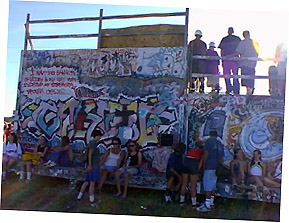
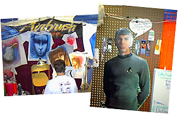
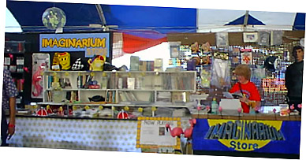

|
 |
 |
| Cornerstone: Welcome!
Art Explosion It's more than a music party -- Tucked behind the underground tent is Cornerstone's ArtRageous and Imaginarium exhibits. Authors, painters, and others of a creative bent can enjoy conferences, discussion, and great coffee. The midnight film festival was cool, too...
So much music, so little time... Sob! Here's a peek at some of the cool stuff I stumbled across over the course of the festival. Some oldies and some fresh stuff -- no matter what the genre, it's hot stuff.
Follow the adventures of Squeaky the Duck on his adventures at the fest. From his near-death experience at the hands of Kevin131 to a DC Talk sighting, he's been almost everywhere.
Well, T-shirts, too. Cornerstone is a great place to find a variety of wacky hairstyles, and most of the owners are good natured sorts who're quite willing to offer their coifs for a good cause -- this page, for one!
What do you get when you put a bunch of music-obsessed usenet junkies in one place? Vibrating hairrushes. That's what. The fourth annual RMC Cornerstone picnic is here, captured in bits and bytes for all of posterity...
Whether it's beating the heat, finding munchies, or selecting that perfect camping site, there's someone who's been through it and has some words of wisdom to offer. Recorded here for posterity are essential Cornerstone survival skills.
|
Cornerstone is far more than a music festival; artists of all kinds turn out to show off their work and see what others are up to. The photo above is only a small section of a long mural that spanned an open section near the exhibition tent -- fest-goers were encouraged to take up paints and leave their mark. In '96, calligraphy artist Timothy Botts worked every day on a beautiful calligraphic mural. By the end of the fest, it was spectacular! 
In a similar vein, the big ramp near the metal/hardcore stage is a frequent hangout for creative graffiti artists. At the beginning of the fest, it's bare wood -- by the last day, it's a multi-layered collage of fresh art.
 In the exhibition tent, artists of all kinds hawk their wares. From framed paintings to handmade jewely to airbrushed T-shirts, you can find just about anything. The Spock cut-out was spotted next to a rack of classic science fiction in the Imaginarium bookstore. It's home to everything from magic tricks to philosophy tomes and Star Trek memorabelia. They even had a few rubber chickens in stock at the beginning of the fest, though Gonzo fans surely snagged them before the first day was out.  Admittedly, I spent most of my time in '97 pursuing music and all related activities. You can only do so much! Next year, I'd like to take more time to check out the wide variety of creative pursuits Cornerstone offers as well. Sculpture... literary criticism... discussion groups on postmodernism and other philosophies... even rock-climbing and a track and field competition! Cornerstone may not have it all, but it sure tries. |
|
|
|